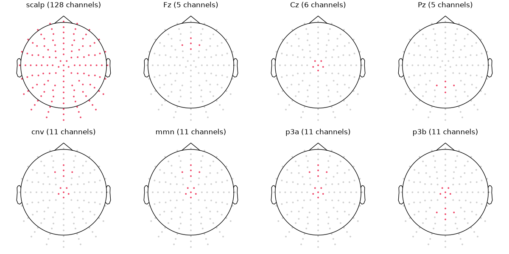

4.4.5. BioSemi ActiveTwo, 128 channels¶
System: BioSemi ActiveTwo, 128 channels.
ROIs: scalp, Fz, Cz, Pz, cnv, mmn, p3a, p3b.
Montages (the MNE montage with the positions):
biosemi128: BioSemi ActiveTwo, 128 channels (A1 to D32)
The channels of each ROI (highlighted), on the positions of biosemi128. The picks keep the channels of the ROI that are in the data.

Channels¶
scalp¶
A1, A2, A3, A4, A5, A6, A7, A8, A9, A10, A11, A12, A13, A14, A15, A16, A17, A18, A19, A20, A21, A22, A23, A24, A25, A26, A27, A28, A29, A30, A31, A32, B1, B2, B3, B4, B5, B6, B7, B8, B9, B10, B11, B12, B13, B14, B15, B16, B17, B18, B19, B20, B21, B22, B23, B24, B25, B26, B27, B28, B29, B30, B31, B32, C1, C2, C3, C4, C5, C6, C7, C8, C9, C10, C11, C12, C13, C14, C15, C16, C17, C18, C19, C20, C21, C22, C23, C24, C25, C26, C27, C28, C29, C30, C31, C32, D1, D2, D3, D4, D5, D6, D7, D8, D9, D10, D11, D12, D13, D14, D15, D16, D17, D18, D19, D20, D21, D22, D23, D24, D25, D26, D27, D28, D29, D30, D31, D32.
Fz¶
C12, C20, C21, C22, C25.
Cz¶
A1, A2, B1, C1, D1, D15.
Pz¶
A4, A5, A19, A20, A32.
cnv¶
A1, A2, B1, C1, C12, C20, C21, C22, C25, D1, D15.
mmn¶
A1, A2, B1, C1, C12, C20, C21, C22, C25, D1, D15.
p3a¶
A1, A2, B1, C1, C12, C20, C21, C22, C25, D1, D15.
p3b¶
A1, A2, A4, A5, A19, A20, A32, B1, C1, D1, D15.